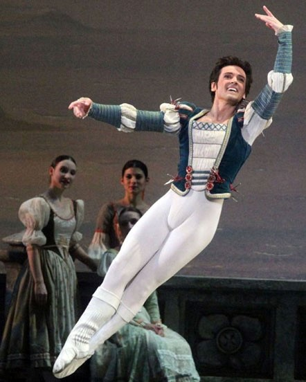
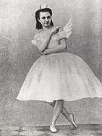

Personagens
Odette

Príncipe Siegfried

Odile


O “Lago dos Cisnes” é uma das peças mais marcantes do ballet clássico mundial. O Teatro Bolshoi, de Moscou, estreou o espetáculo em 1877, com a coreografia elaborada por Julius Reisinger a partir de uma composição encomendada a Tchaikovsky — autor de outras obras de impacto na história do ballet, como o “O Quebra Nozes” (1892).
Uma das razões de tamanho sucesso é a capacidade da montagem em articular a fantástica melodia elaborada por Tchaikovsky com dança e interpretação dos bailarinos em um nível de excelência excepcional.


Porém, o curioso é que a primeira versão da peça foi um fracasso de público. “O Lago dos Cisnes” só se tornaria uma referência para o ballet clássico a partir de uma segunda montagem, encenada em São Petersburgo em 1895, depois da morte de Tchaikovsky, com nova coreografia, elaborada por Marius Petipa e Lev Ivanov.

Encenada em quatro atos, a peça conta a história da princesa Odette, uma jovem aprisionada no corpo de um cisne pelo feiticeiro Von Rothbart. Vivendo no entorno de um lago formado pelas lágrimas de sua mãe, durante o dia, Odette se mantém em condição animal, se revelando humana somente por algumas horas da noite.
Para se libertar dessa condição, ela precisa que um jovem admirador virgem lhe declare amor e fidelidade. E, caso seja traída, Odette permanecerá para sempre como cisne.
No primeiro ato da peça, conhecemos o príncipe Siegfried que, em seu aniversário de 21 anos, sai para caçar e se depara com alguns cisnes. No segundo ato, seguindo as aves, pelas quais se encanta, Siegfried mal percebe o cair da noite e, de repente, se surpreende ao ver o mais belo dos pássaros que admirava se transformar numa linda mulher, Odette.
A jovem revela a sua condição, mas, neste momento, o encontro é interrompido pela aparição de Von Rothbart. Siegfried dispara uma flecha em direção ao feiticeiro, mas Odette entra na frente, pois a morte de Von Rothbart sem a eliminação do feitiço a aprisionaria para sempre. O príncipe volta para o castelo, mas reconhece para si que deixou para trás o seu amor.
No terceiro ato, durante a sua festa de aniversário, Siegfried recusa todas as pretendentes que aparecem, apesar da pressão da rainha, a sua mãe. No entanto, em determinado momento, o príncipe se depara com a jovem Odile, o cisne negro, gêmea má de Odette e filha de Von Rothbart. Pensando se tratar de sua amada, ele é enganado, declarando amor e fidelidade a Odile. Ao se dar conta do que acontecera, Siegfried foge.
No quarto ato, Odette e Siegfried, vindo da festa, se encontram no lago. Diante da maldição em que se encontra, reforçada pela traição não intencional realizada por Siegfried, Odette pretende se matar para se livrar de sua condição.
Siegfried decide se unir a ela e os dois se jogam no lago, com a esperança de viverem juntos na vida após a morte. Com o ato do casal apaixonado, Von Rothbart recebe um choque mortal.
Data: 20 de fevereiro de 1877 Lugar: Teatro Bolshoi, Moscou Coreógrafo: Vladimir Begitchev é Vasily Geltzer Regente: Stepan Ryabov
Data: 15 de janeiro de 1895 Lugar: Teatro Mariinsky, São Petersburgo Coreógrafo: Marius Petipa, Atos 1 e 3, Lev Ivanov, Atos 2 e 4 Regente: Riccardo Drigo

Algumas variações que compõem o espetáculo: